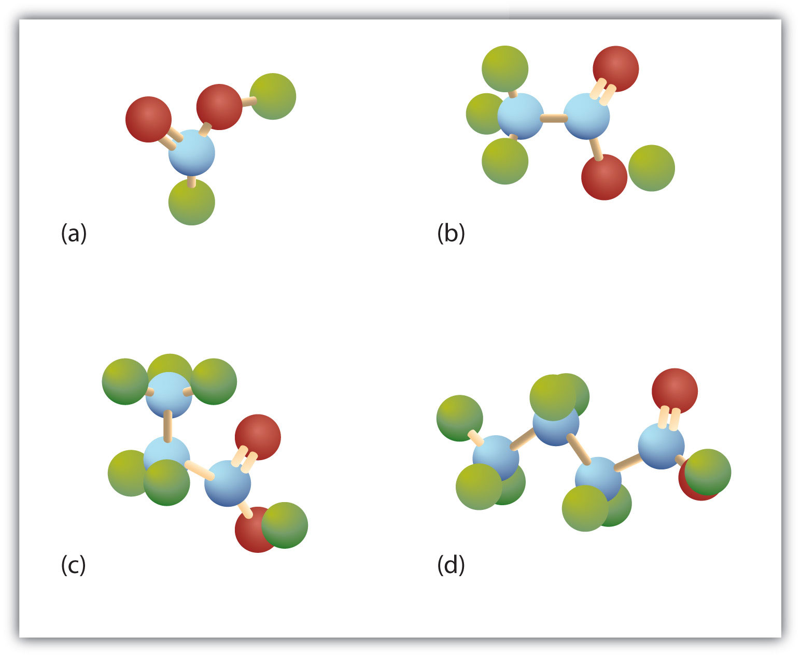

Organic acids have been known for ages. Prehistoric people likely made acetic acid when their fermentation reactions went awry and produced vinegar instead of wine. The Sumerians (2900–1800 BCE) used vinegar as a condiment, a preservative, an antibiotic, and a detergent. Citric acid was discovered by an Islamic alchemist, Jabir Ibn Hayyan (also known as Geber), in the 8th century, and crystalline citric acid was first isolated from lemon juice in 1784 by the Swedish chemist Carl Wilhelm Scheele. Medieval scholars in Europe were aware that the crisp, tart flavor of citrus fruits is caused by citric acid. Naturalists of the 17th century knew that the sting of a red ant’s bite was due to an organic acid that the ant injected into the wound. The acetic acid of vinegar, the formic acid of red ants, and the citric acid of fruits all belong to the same family of compounds—carboxylic acids. Soaps are salts of long-chain carboxylic acids. (For more information about soaps, see Chapter 17 "Lipids", Section 17.2 "Fats and Oils".)
Prehistoric people also knew about organic bases—by smell if not by name; amines are the organic bases produced when animal tissue decays.
The organic compounds that we consider in this chapter are organic acids and bases. We will also consider two derivatives of carboxylic acids: esters and amides. An ester is derived from a carboxylic acid and an alcohol. Fats and oils are esters, as are many important fragrances and flavors. (For more information about fats and oils, see Chapter 17 "Lipids", Section 17.2 "Fats and Oils".) An amide is derived from a carboxylic acid and either ammonia or an amine. Proteins, often called “the stuff of life,” are polyamides. (For more information about proteins, see Chapter 18 "Amino Acids, Proteins, and Enzymes", Section 18.4 "Proteins".)
We introduced the carbonyl group (C=O)—the functional group of aldehydes and ketones—in Chapter 14 "Organic Compounds of Oxygen". The carbonyl group is also found in carboxylic acids, esters, and amides. However, in these compounds, the carbonyl group is only part of the functional group.
A carboxylic acidAn organic compound that has a carboxyl group. is an organic compound that has a carboxyl groupA functional group that contains a carbon–oxygen bond and an OH group also attached to the same carbon atom.. The carboxyl group is a functional group that contains a carbon–oxygen double bond and an OH group also attached to the same carbon atom, but it has characteristic properties of its own. As with aldehydes and ketones, carboxylic acid formulas can be written to show the carbon-to-oxygen double bond explicitly, or the carboxyl group can be written in condensed form on one line. In general, carboxylic acids are represented by the formula RCOOH, where R is a hydrocarbon group.

Esters are represented by the formula RCOOR’, where R and R’ are hydrocarbon groups. The esterAn organic compound derived from a carboxylic acid and an alcohol in which the OH of the acid is replaced by an OR group., which is organic compound derived from a carboxylic acid and an alcohol in which the OH of the acid is replaced by an OR group, looks somewhat like an ether and also somewhat like a carboxylic acid. Even so, compounds in this group react neither like carboxylic acids nor like ethers; they make up a distinctive family. Unlike ethers, esters have a carbonyl group. Unlike carboxylic acids, esters have no acidic hydrogen atom; they have a hydrocarbon group in its place.

An amineAn organic compound derived from ammonia by the replacement of one, two, or three of the hydrogens atoms by alkyl or aryl groups. is a compound derived from ammonia (NH3); it has one, two, or all three of the hydrogen atoms of NH3 replaced by an alkyl (or an aryl) group. Like NH3, amines are weak bases. The functional group of an amine is a nitrogen atom with a lone pair of electrons and with one, two, or three alkyl or aryl groups attached.

The amideAn organic compound with a carbonyl group joined to a nitrogen atom from ammonia or an amine. functional group has a carbonyl group joined to a nitrogen atom from ammonia or an amine. The properties of the amide functional group differ from those of the simple carbonyl group, NH3, and amines.

Esters and amides are considered to be derivatives of carboxylic acids because the OH in the carboxyl group is replaced with another group. These functional groups are listed in Table 15.1 "Organic Acids, Bases, and Acid Derivatives", along with an example (identified by common and International Union of Pure and Applied Chemistry [IUPAC] names) for each type of compound.
Most familiar carboxylic acids have an even number of carbon atoms. As we shall see in Chapter 17 "Lipids", these acids—called fatty acids—are synthesized in nature by adding two carbon atoms at a time.
Table 15.1 Organic Acids, Bases, and Acid Derivatives
| Family | Functional Group | Example | Common Name | IUPAC Name |
|---|---|---|---|---|
| carboxylic acid |

|

|
acetic acid | ethanoic acid |
| amine |

|
CH3NH2 | methylamine | methanamine (aminomethane) |
| amide |

|

|
acetamide | ethanamide |
| ester |

|

|
methyl acetate | methyl ethanoate |
How is the carboxyl group related to the carbonyl group and the OH group?
How is the amide group related to the carboxyl group and amines?
The carboxyl group has a carbonyl group joined to an OH group.
The amide group has a carboxyl group joined to an amino group.
Draw the functional group in each class of compounds.
How are the functional groups in Exercise 1 alike and different?
Draw the functional group in each class of compounds.
How are the functional groups in Exercise 2 alike and different?


Carboxylic acids occur widely in nature, often combined with alcohols or other functional groups, as in fats, oils, and waxes. They are components of many foods, medicines, and household products (Figure 15.1 "Carboxylic Acids in the Home"). Not surprisingly, many of them are best known by common names based on Latin and Greek words that describe their source. What you learn in this chapter about the chemistry of carboxylic acids will help you understand biochemistry (Chapter 16 "Carbohydrates" through Chapter 20 "Energy Metabolism").
The simplest carboxylic acid, formic acid (HCOOH), was first obtained by the distillation of ants (Latin formica, meaning “ant”). The bites of some ants inject formic acid, and the stings of wasps and bees contain formic acid (as well as other poisonous materials).
The next higher homolog is acetic acid, which is made by fermenting cider and honey in the presence of oxygen. This fermentation produces vinegar, a solution containing 4%–10% acetic acid, plus a number of other compounds that add to its flavor. Acetic acid is probably the most familiar weak acid used in educational and industrial chemistry laboratories.
Pure acetic acid solidifies at 16.6°C, only slightly below normal room temperature. In the poorly heated laboratories of the late 19th and early 20th centuries in northern North America and Europe, acetic acid often “froze” on the storage shelf. For that reason, pure acetic acid (sometimes called concentrated acetic acid) came to be known as glacial acetic acid, a name that survives to this day.
The third homolog, propionic acid (CH3CH2COOH), is seldom encountered in everyday life. The fourth homolog, butyric acid (CH3CH2CH2COOH), is one of the most foul-smelling substances imaginable. It is found in rancid butter and is one of the ingredients of body odor. By recognizing extremely small amounts of this and other chemicals, bloodhounds are able to track fugitives. Models of the first four carboxylic acids are shown in Figure 15.2 "Ball-and-Stick Models of Carboxylic Acids".
Figure 15.2 Ball-and-Stick Models of Carboxylic Acids
Carboxylic acids feature a carbon atom doubly bonded to an oxygen atom and also joined to an OH group. The four acids illustrated here are formic acid (a), acetic acid (b), propionic acid (c), and butyric acid (d).
The acid with the carboxyl group attached directly to a benzene ring is called benzoic acid (C6H5COOH).
The common names of carboxylic acids use Greek letters (α, β, γ, δ, and so forth), not numbers, to designate the position of substituent groups in acids. These letters refer to the position of the carbon atom in relation to the carboxyl carbon atom.
In the nomenclature system of the International Union of Pure and Applied Chemistry (IUPAC), the parent hydrocarbon is the one that corresponds to the longest continuous chain (LCC) containing the carboxyl group. The -e ending of the parent alkane is replaced by the suffix -oic and the word acid. For example, the carboxylic acid derived from pentane is pentanoic acid (CH3CH2CH2CH2COOH). As with aldehydes, the carboxyl carbon atom is counted first; numbers are used to indicate any substituted carbon atoms in the parent chain.
Greek letters are used with common names; numbers are used with IUPAC names.
Give the common and IUPAC names for each compound.
Solution
The LCC contains four carbon atoms; the compound is therefore named as a substituted butyric (or butanoic) acid.
The chlorine atom is attached to the γ-carbon in the common system or C4 in the IUPAC system. The compound is γ-chlorobutyric acid or 2-bromobutanoic acid.

The bromine (Br) atom is at the α-carbon in the common system or C2 in the IUPAC system. The compound is α-bromobutyric acid or 4-chlorobutanoic acid.
Give the IUPAC name for each compound.
ClCH2CH2CH2CH2COOH
(CH3)2CHCH2CHBrCOOH
Write the condensed structural formula for β-chloropropionic acid.
Solution
Propionic acid has three carbon atoms: C–C–COOH. Attach a chlorine (Cl) atom to the parent chain at the beta carbon atom, the second one from the carboxyl group: Cl–C–C–COOH. Then add enough hydrogen atoms to give each carbon atom four bonds: ClCH2CH2COOH.
Write the condensed structural formula for 4-bromo-5-methylhexanoic acid.
What is the IUPAC name for the straight-chain carboxylic acid with six carbon atoms?
The straight-chain aldehyde with five carbon atoms has the common name valeraldehyde. What is the common name of the corresponding straight-chain carboxylic acid?
hexanoic acid
valeric acid
Draw the structure for each compound.
Draw the structure for each compound.
Name each compound with either the IUPAC name, the common name, or both.
Name each compound with its IUPAC name.
As we noted in Chapter 14 "Organic Compounds of Oxygen", the oxidation of aldehydes or primary alcohols forms carboxylic acids:

In the presence of an oxidizing agent, ethanol is oxidized to acetaldehyde, which is then oxidized to acetic acid.

This process also occurs in the liver, where enzymes catalyze the oxidation of ethanol to acetic acid.
Acetic acid can be further oxidized to carbon dioxide and water.
Caproic acid (hexanoic acid) can be prepared in an oxidation reaction from
Give the structures of the aldehyde and the carboxylic acid formed by the oxidation of isobutyl alcohol [(CH3)2CHCH2OH].

Caprylic acid (octanoic acid) can be prepared in an oxidation reaction from
Give the structures of the aldehyde and the carboxylic acid formed by the oxidation of 1,4-butanediol (HOCH2CH2CH2CH2OH).
Many carboxylic acids are colorless liquids with disagreeable odors. The carboxylic acids with 5 to 10 carbon atoms all have “goaty” odors (explaining the odor of Limburger cheese). These acids are also produced by the action of skin bacteria on human sebum (skin oils), which accounts for the odor of poorly ventilated locker rooms. The acids with more than 10 carbon atoms are waxlike solids, and their odor diminishes with increasing molar mass and resultant decreasing volatility.
Carboxylic acids exhibit strong hydrogen bonding between molecules. They therefore have high boiling points compared to other substances of comparable molar mass.
The carboxyl group readily engages in hydrogen bonding with water molecules (Figure 15.3 "Hydrogen Bonding between an Acetic Acid Molecule and Water Molecules"). The acids with one to four carbon atoms are completely miscible with water. Solubility decreases as the carbon chain length increases because dipole forces become less important and dispersion forces become more predominant. Hexanoic acid [CH3(CH2)4COOH] is barely soluble in water (about 1.0 g/100 g of water). Palmitic acid [CH3(CH2)14COOH], with its large nonpolar hydrocarbon component, is essentially insoluble in water. The carboxylic acids generally are soluble in such organic solvents as ethanol, toluene, and diethyl ether.
Figure 15.3 Hydrogen Bonding between an Acetic Acid Molecule and Water Molecules

Carboxylic acids of low molar mass are quite soluble in water.
Table 15.2 "Physical Constants of Carboxylic Acids" lists some physical properties for selected carboxylic acids. The first six are homologs. Notice that the boiling points increase with increasing molar mass, but the melting points show no regular pattern.
Table 15.2 Physical Constants of Carboxylic Acids
| Condensed Structural Formula | Name of Acid | Melting Point (°C) | Boiling Point (°C) | Solubility (g/100 g of Water) |
|---|---|---|---|---|
| HCOOH | formic acid | 8 | 100 | miscible |
| CH3COOH | acetic acid | 17 | 118 | miscible |
| CH3CH2COOH | propionic acid | –22 | 141 | miscible |
| CH3(CH2)2COOH | butyric acid | –5 | 163 | miscible |
| CH3(CH2)3COOH | valeric acid | –35 | 187 | 5 |
| CH3(CH2)4COOH | caproic acid | –3 | 205 | 1.1 |
| C6H5COOH | benzoic acid | 122 | 249 | 0.29 |
Which compound has the higher boiling point—butanoic acid (molar mass 88) or 2-pentanone (molar mass 86)? Explain.
Would you expect butyric acid (butanoic acid) to be more or less soluble than 1-butanol in water? Explain.
butyric acid because of hydrogen bonding (There is no intermolecular hydrogen bonding in 2-pentanone.)
more soluble because there is more extensive hydrogen bonding
Which compound has the higher boiling point—CH3CH2CH2OCH2CH3 or CH3CH2CH2COOH? Explain.
Which compound has the higher boiling point—CH3CH2CH2CH2CH2OH or CH3CH2CH2COOH? Explain.
Which compound is more soluble in water—CH3COOH or CH3CH2CH2CH3? Explain.
Which compound is more soluble in water—CH3CH2COOH or CH3CH2CH2CH2CH2COOH? Explain.
CH3CH2CH2COOH because of hydrogen bonding (There is no intermolecular hydrogen bonding with CH3CH2CH2OCH2CH3.)
CH3COOH because it engages in hydrogen bonding with water (There is no intermolecular hydrogen bonding with CH3CH2CH2CH3.)
Water-soluble carboxylic acids ionize slightly in water to form moderately acidic solutions.
Their aqueous solutions exhibit the typical properties of acids, such as changing litmus from blue to red.
The anion formed when a carboxylic acid dissociates is called the carboxylate anion (RCOO−).
Whether soluble in water or not, carboxylic acids react with aqueous solutions of sodium hydroxide (NaOH), sodium carbonate (Na2CO3), and sodium bicarbonate (NaHCO3) to form salts:
RCOOH + NaOH(aq) → RCOO−Na+(aq) + H2O 2RCOOH + Na2CO3(aq) → 2RCOO−Na+(aq) + H2O + CO2(g) RCOOH + NaHCO3(aq) → RCOO−Na+(aq) + H2O + CO2(g)In these reactions, the carboxylic acids act like inorganic acids: they neutralize basic compounds. With solutions of carbonate (CO3) and bicarbonate (HCO3) ions, they also form carbon dioxide gas.
Carboxylic acid salts are named in the same manner as inorganic salts: the name of the cation is followed by the name of the organic anion. The name of the anion is obtained by dropping the -ic ending of the acid name and replacing it with the suffix -ate. This rule applies whether we are using common names or International Union of Pure and Applied Chemistry (IUPAC) names:
The salts of long-chain carboxylic acids are called soaps. We discuss the chemistry of soaps further in Chapter 17 "Lipids", Section 17.2 "Fats and Oils".
Write an equation for each reaction.
Solution
Propionic acid has three carbon atoms, so its formula is CH2CH2COOH.
Propionic acid ionizes in water to form a propionate ion and a hydronium (H3O+) ion.
CH3CH2COOH(aq) + H2O(ℓ) → CH3CH2COO−(aq) + H3O+(aq)Propionic acid reacts with NaOH(aq) to form sodium propionate and water.
CH3CH2COOH(aq) + NaOH(aq) → CH3CH2COO−Na+(aq) + H2O(ℓ)Write an equation for each reaction.
the ionization of formic acid in water
the ionization of p-chlorobenzoic acid in water
Write an equation for the reaction of decanoic acid with each compound.
Solution
Decanoic acid has 10 carbon atoms. It reacts with NaOH to form a salt and water (H2O).
CH3(CH2)8COOH + NaOH(aq) → CH3(CH2)8COO−Na+(aq) + H2O(ℓ)With NaHCO3, the products are a salt, H2O, and carbon dioxide (CO2).
CH3(CH2)8COOH + NaHCO3(aq) → CH3(CH2)8COO−Na+(aq) + H2O(ℓ) + CO2(g)Write an equation for the reaction of benzoic acid with each compound.
aqueous sodium hydroxide (NaOH)
aqueous sodium bicarbonate (NaHCO3)
Some organic salts are used as preservatives in food products. They prevent spoilage by inhibiting the growth of bacteria and fungi. Calcium and sodium propionate, for example, are added to processed cheese and bakery goods; sodium benzoate is added to cider, jellies, pickles, and syrups; and sodium sorbate and potassium sorbate are added to fruit juices, sauerkraut, soft drinks, and wine. Look for them on ingredient labels the next time you shop for groceries.
How does the neutralization of a carboxylic acid differ from that of an inorganic acid? How are they similar?
What products are formed when a carboxylic acid is neutralized with a strong base? What additional product is formed when a carboxylic acid is neutralized with a carbonate or a bicarbonate?
Insoluble carboxylic acids often form soluble carboxylate salts. Both form a salt and water.
a carboxylate salt and water; carbon dioxide
Write the equation for the ionization of CH3CH2CH2COOH in water.
Write the equation for the neutralization of CH3CH2CH2COOH with sodium hydroxide [NaOH(aq)].
Write the equation for the reaction of CH3COOH with sodium carbonate [Na2CO3(aq)].
Write the equation for the reaction of CH3CH2COOH with sodium bicarbonate [NaHCO3(aq)].
Write the equation for the ionization of propionic acid in water.
Write the equation for the ionization of γ-chloropentanoic acid in water.
Write an equation for the reaction of butyric acid with each compound.
Write the condensed structural formula for each compound.
Name each compound.
CH3CH2CH2COOH(aq) + H2O(ℓ) → CH3CH2CH2COO−(aq) + H3O+(aq)
2CH3COOH + Na2CO3(aq) → 2CH3COO−Na+(aq) + H2O(ℓ) + CO2(g)
CH3CH2COOH(aq) + H2O(ℓ) → CH3CH2COO−(aq) + H3O+(aq)
Esters have the general formula RCOOR′, where R may be a hydrogen atom, an alkyl group, or an aryl group, and R′ may be an alkyl group or an aryl group but not a hydrogen atom. (If it were hydrogen atom, the compound would be a carboxylic acid.) Figure 15.4 "The Structure of Esters" shows models for two common esters.
Figure 15.4 The Structure of Esters

Esters feature a carbon-to-oxygen double bond that is also singly bonded to a second oxygen atom, which is then joined to an alkyl or an aryl group. The esters shown here are ethyl acetate (a) and methyl butyrate (b).
Esters occur widely in nature. Unlike carboxylic acids, esters generally have pleasant odors and are often responsible for the characteristic fragrances of fruits and flowers. Once a flower or fruit has been chemically analyzed, flavor chemists can attempt to duplicate the natural odor or taste. Both natural and synthetic esters are used in perfumes and as flavoring agents.
Fats and vegetable oils are esters of long-chain fatty acids and glycerol. Esters of phosphoric acid are of the utmost importance to life. (For more information about fats/oils and esters, see Chapter 17 "Lipids", Section 17.2 "Fats and Oils", and Section 15.10 "Esters of Phosphoric Acid", respectively.)
Although esters are covalent compounds and salts are ionic, esters are named in a manner similar to that used for naming salts. The group name of the alkyl or aryl portion is given first and is followed by the name of the acid portion. In both common and International Union of Pure and Applied Chemistry (IUPAC) nomenclature, the -ic ending of the parent acid is replaced by the suffix -ate (Table 15.3 "Nomenclature of Esters").
Table 15.3 Nomenclature of Esters
| Condensed Structural Formula | Common Name | IUPAC Name |
|---|---|---|
| HCOOCH3 | methyl formate | methyl methanoate |
| CH3COOCH3 | methyl acetate | methyl ethanoate |
| CH3COOCH2CH3 | ethyl acetate | ethyl ethanoate |
| CH3CH2COOCH2CH3 | ethyl propionate | ethyl propanoate |
| CH3CH2CH2COOCH(CH3)2 | isopropyl butyrate | isopropyl butanoate |

|
ethyl benzoate | ethyl benzoate |
Give the common and IUPAC names for each compound.


Solution
The alkyl group attached directly to the oxygen atom is a butyl group (in green).

The part of the molecule derived from the carboxylic acid (in red) has three carbon atoms. It is called propionate (common) or propanoate (IUPAC). The ester is therefore butyl propionate or butyl propanoate.
An alkyl group (in green) is attached directly to the oxygen atom by its middle carbon atom; it is an isopropyl group. The part derived from the acid (that is, the benzene ring and the carbonyl group, in red) is benzoate. The ester is therefore isopropyl benzoate (both the common name and the IUPAC name).

Give the common and IUPAC names for each compound.


Draw the structure for ethyl pentanoate.
Solution
Start with the portion from the acid. Draw the pentanoate (five carbon atoms) group first; keeping in mind that the last carbon atom is a part of the carboxyl group.

Then attach the ethyl group to the bond that ordinarily holds the hydrogen atom in the carboxyl group.

Draw the structure for phenyl pentanoate.
From what carboxylic acid and what alcohol can isopropyl hexanoate be made?
From what carboxylic acid and what alcohol can cyclobutyl butyrate be made?
hexanoic acid and isopropyl alcohol
butyric acid and cyclobutyl alcohol
Draw the structure for each compound.
Draw the structure for each compound.
Name each compound with both the common name and the IUPAC name.


Name each compound with both the common name and the IUPAC name.


Ester molecules are polar but have no hydrogen atom attached directly to an oxygen atom. They are therefore incapable of engaging in intermolecular hydrogen bonding with one another and thus have considerably lower boiling points than their isomeric carboxylic acids counterparts. Because ester molecules can engage in hydrogen bonding with water molecules, however, esters of low molar mass are somewhat soluble in water. Borderline solubility occurs in those molecules that have three to five carbon atoms. Table 15.4 "Physical Properties of Some Esters" lists the physical properties of some common esters.
Esters are common solvents. Ethyl acetate is used to extract organic solutes from aqueous solutions—for example, to remove caffeine from coffee. It also is used to remove nail polish and paint. Cellulose nitrate is dissolved in ethyl acetate and butyl acetate to form lacquers. The solvent evaporates as the lacquer “dries,” leaving a thin film on the surface. High boiling esters are used as softeners (plasticizers) for brittle plastics.
Table 15.4 Physical Properties of Some Esters
| Condensed Structural Formula | Name | Molar Mass | Melting Point (°C) | Boiling Point (°C) | Aroma |
|---|---|---|---|---|---|
| HCOOCH3 | methyl formate | 60 | −99 | 32 | |
| HCOOCH2CH3 | ethyl formate | 74 | −80 | 54 | rum |
| CH3COOCH3 | methyl acetate | 74 | −98 | 57 | |
| CH3COOCH2CH3 | ethyl acetate | 88 | −84 | 77 | |
| CH3CH2CH2COOCH3 | methyl butyrate | 102 | −85 | 102 | apple |
| CH3CH2CH2COOCH2CH3 | ethyl butyrate | 116 | −101 | 121 | pineapple |
| CH3COO(CH2)4CH3 | pentyl acetate | 130 | −71 | 148 | pear |
| CH3COOCH2CH2CH(CH3)2 | isopentyl acetate | 130 | −79 | 142 | banana |
| CH3COOCH2C6H5 | benzyl acetate | 150 | −51 | 215 | jasmine |
| CH3CH2CH2COO(CH2)4CH3 | pentyl butyrate | 158 | −73 | 185 | apricot |
| CH3COO(CH2)7CH3 | octyl acetate | 172 | −39 | 210 | orange |
Which compound has the higher boiling point—CH3CH2CH2CH2OH or CH3COOCH3? Explain.
Which compound is more soluble in water—methyl butyrate or butyric acid? Explain.
CH3CH2CH2CH2OH because there is intermolecular hydrogen bonding (There is no intermolecular hydrogen bonding in CH3COOCH3.)
butyric acid because of hydrogen bonding with water
Which compound has the higher boiling point—CH3CH2CH2COOH or CH3CH2CH2COOCH3? Explain.
Which compound is more soluble in water—methyl acetate or octyl acetate? Explain.
CH3CH2CH2COOH because there is intermolecular hydrogen bonding (There is no intermolecular hydrogen bonding in CH3CH2COOCH3.)
Some esters can be prepared by esterificationThe formation of an ester from a carboxylic acid and an alcohol., a reaction in which a carboxylic acid and an alcohol, heated in the presence of a mineral acid catalyst, form an ester and water:
The reaction is reversible. As a specific example of an esterification reaction, butyl acetate can be made from acetic acid and 1-butanol.
A commercially important esterification reaction is condensation polymerization, in which a reaction occurs between a dicarboxylic acid and a dihydric alcohol (diol), with the elimination of water. Such a reaction yields an ester that contains a free (unreacted) carboxyl group at one end and a free alcohol group at the other end. Further condensation reactions then occur, producing polyester polymers.
The most important polyester, polyethylene terephthalate (PET), is made from terephthalic acid and ethylene glycol monomers:
Polyester molecules make excellent fibers and are used in many fabrics. A knitted polyester tube, which is biologically inert, can be used in surgery to repair or replace diseased sections of blood vessels. PET is used to make bottles for soda pop and other beverages. It is also formed into films called Mylar. When magnetically coated, Mylar tape is used in audio- and videocassettes. Synthetic arteries can be made from PET, polytetrafluoroethylene, and other polymers.
From what carboxylic acid and what alcohol can the ester isopropyl nonanoate be made?
From what carboxylic acid and what alcohol can the ester cyclobutyl butyrate be made?
nonanoic acid and isopropyl alcohol
butyric acid and cyclobutyl alcohol
Write the equation for the reaction of acetic acid with each compound.
Write the equation for the reaction of benzoic acid with each compound.
Esters are neutral compounds, unlike the acids from which they are formed. In typical reactions, the alkoxy (OR′) group of an ester is replaced by another group. One such reaction is hydrolysisThe reaction of a substance with water., literally “splitting with water.” The hydrolysis of esters is catalyzed by either an acid or a base.
Acidic hydrolysis is simply the reverse of esterification. The ester is heated with a large excess of water containing a strong-acid catalyst. Like esterification, the reaction is reversible and does not go to completion.

As a specific example, butyl acetate and water react to form acetic acid and 1-butanol. The reaction is reversible and does not go to completion.

Write an equation for the acidic hydrolysis of ethyl butyrate (CH3CH2CH2COOCH2CH3) and name the products.
Solution
Remember that in acidic hydrolysis, water (HOH) splits the ester bond. The H of HOH joins to the oxygen atom in the OR part of the original ester, and the OH of HOH joins to the carbonyl carbon atom:

The products are butyric acid (butanoic acid) and ethanol.
Write an equation for the acidic hydrolysis of methyl butanoate and name the products.
When a base (such as sodium hydroxide [NaOH] or potassium hydroxide [KOH]) is used to hydrolyze an ester, the products are a carboxylate salt and an alcohol. Because soaps are prepared by the alkaline hydrolysis of fats and oils, alkaline hydrolysis of esters is called saponificationThe hydrolysis of fats and oils in the presence of a base to make soap. (Latin sapon, meaning “soap,” and facere, meaning “to make”). In a saponification reaction, the base is a reactant, not simply a catalyst. The reaction goes to completion:

As a specific example, ethyl acetate and NaOH react to form sodium acetate and ethanol:

Write an equation for the hydrolysis of methyl benzoate in a potassium hydroxide solution.
Solution
In basic hydrolysis, the molecule of the base splits the ester linkage. The acid portion of the ester ends up as the salt of the acid (in this case, the potassium salt). The alcohol portion of the ester ends up as the free alcohol.

Write the equation for the hydrolysis of ethyl propanoate in a sodium hydroxide solution.
How do acidic hydrolysis and basic hydrolysis of an ester differ in terms of
What is saponification?
the basic hydrolysis of an ester
Write an equation for the acid-catalyzed hydrolysis of ethyl acetate.
Write an equation for the base-catalyzed hydrolysis of ethyl acetate.
Complete each equation.


Complete each equation.
Just as carboxylic acids do, inorganic acids such as nitric acid (HNO3), sulfuric acid (H2SO4), and phosphoric acid (H3PO4) also form esters. The esters of phosphoric acid are especially important in biochemistry. A phosphoric acid molecule can form a monoalkyl, a dialkyl, or a trialkyl ester by reaction with one, two, or three molecules of an alcohol.

Esters of pyrophosphoric acid and triphosphoric acid are also important in biochemistry.

Esters of these acids are present in every plant and animal cell. They are biochemical intermediates in the transformation of food into usable energy. The bonds between phosphate units in adenosine triphosphate (ATP) are called phosphoanhydride bonds. These are high-energy bonds that store energy from the metabolism of foods. Hydrolysis of ATP releases energy as it is needed for biochemical processes (for instance, for muscle contraction). Phosphate esters are also important structural constituents of phospholipids and nucleic acids. (For more information about phospholipids and nucleic acids, see Chapter 17 "Lipids", Section 17.3 "Membranes and Membrane Lipids", and Chapter 19 "Nucleic Acids", respectively.)
The explosive nitroglycerin (glyceryl trinitrate) is an ester formed from glycerol and nitric acid. It is used in medicine to relieve chest pain in heart disease.

What compounds combine to form phosphate esters?
phosphoric acids and alcohols
Draw the structure for each compound.
Name each compound.


Amines are classified according to the number of carbon atoms bonded directly to the nitrogen atom. A primary (1°) amineA compound that has only one alkyl or aryl group on the nitrogen atom. has one alkyl (or aryl) group on the nitrogen atom, a secondary (2°) amineA compound that has two alkyl or aryl groups on the nitrogen atom. has two, and a tertiary (3°) amineA compound that has three alkyl or aryl groups on the nitrogen atom. has three (Figure 15.5 "The Structure of Amines Compared to Water, an Alcohol, and an Ether").
Figure 15.5 The Structure of Amines Compared to Water, an Alcohol, and an Ether

To classify alcohols, we look at the number of carbon atoms bonded to the carbon atom bearing the OH group, not the oxygen atom itself. Thus, although isopropylamine looks similar to isopropyl alcohol, the former is a primary amine, while the latter is a secondary alcohol.

The common names for simple aliphatic amines consist of an alphabetic list of alkyl groups attached to the nitrogen atom, followed by the suffix -amine. (Systematic names are often used by some chemists.) The amino groupAn NH2 unit. (NH2) is named as a substituent in more complicated amines, such as those that incorporate other functional groups or in which the alkyl groups cannot be simply named.
Name and classify each compound.

Solution
Name and classify each compound.


CH3CH2CH2CH2NH2
CH3CH2CH2NHCH2CH2 CH3
Draw the structure for each compound and classify.
Solution
The name indicates that there are an isopropyl group (in red) and two methyl groups (in green) attached to the nitrogen atom; the amine is tertiary.

The name indicates that there are two propyl groups attached to the nitrogen atom; the amine is secondary. (The third bond on the nitrogen atom goes to a hydrogen atom.)
CH3CH2CH2NHCH2CH2CH3Draw the structure for each compound and classify.
ethylisopropylamine
diethylpropylamine
The primary amine in which the nitrogen atom is attached directly to a benzene ring has a special name—aniline. Aryl amines are named as derivatives of aniline.

Name this compound.

Solution
The benzene ring with an amino (NH2) group is aniline. The compound is named as a derivative of aniline: 3-bromoaniline or m-bromoaniline.
Name this compound.

Draw the structure for p-ethylaniline and classify.
Solution
The compound is a derivative of aniline. It is a primary amine having an ethyl group located para to the amino (NH2) group.

Draw the structure for p-isopropylaniline and classify.
Draw the structure for 2-amino-3-methylpentane.
Solution
Always start with the parent compound: draw the pentane chain. Then attach a methyl group at the third carbon atom and an amino group at the second carbon atom.

Draw the structure for 2-amino-3-ethyl-1-chloroheptane.
Ammonium (NH4+) ions, in which one or more hydrogen atoms are replaced with alkyl groups, are named in a manner analogous to that used for simple amines. The alkyl groups are named as substituents, and the parent species is regarded as the NH4+ ion. For example, CH3NH3+ is the methylammonium ion. The ion formed from aniline (C6H5NH3+) is called the anilinium ion.
Name each ion.
Solution
The ions have one, two, three, and four methyl (CH3) groups attached to a nitrogen atom. Their names are as follows:
Name each ion.
CH3CH2NH3+
(CH3CH2)3NH+
(CH3CH2CH2)2NH2+
(CH3CH2CH2CH2)4N+
To what inorganic compound are the amines related?
How are amines classified?
ammonia
by the number of hydrocarbon groups on the nitrogen atom: primary amine, one group; secondary amine, two groups; tertiary amine, three groups
The amine functional group is as follows:

Draw the structure for each compound and classify the amine as primary, secondary, or tertiary.
Draw the structure for each compound and classify the amine as primary, secondary, or tertiary.
Draw the structure for each compound.
Draw the structure for each compound.
Name each compound.


Name each compound.
Draw the structure for each compound.
Draw the structure for each compound.
Name each compound.
Name each compound.
tertiary


Primary and secondary amines have hydrogen atoms bonded to an nitrogen atom and are therefore capable of hydrogen bonding (part (a) of Figure 15.6 "Hydrogen Bonding"), although not as strongly as alcohol molecules (which have hydrogen atoms bonded to an oxygen atom, which is more electronegative than nitrogen). These amines boil at higher temperatures than alkanes but at lower temperatures than alcohols of comparable molar mass. For example, compare the boiling point of methylamine (CH3NH2; −6°C) with those of ethane (CH3CH3; −89°C) and methanol (CH3OH; 65°C). Tertiary amines have no hydrogen atom bonded to the nitrogen atom and so cannot participate in intermolecular hydrogen bonding. They have boiling points comparable to those of ethers (Table 15.5 "Physical Properties of Some Amines and Comparable Oxygen-Containing Compounds").
Figure 15.6 Hydrogen Bonding

(a) Amine molecules are associated through hydrogen bonding. (b) An amine molecule can form a hydrogen bond with water molecules.
Table 15.5 Physical Properties of Some Amines and Comparable Oxygen-Containing Compounds
| Name | Condensed Structural Formula | Class | Molar Mass | Boiling Point (°C) | Solubility at 25°C (g/100 g Water) |
|---|---|---|---|---|---|
| butylamine | CH3CH2CH2CH2NH2 | 1° | 73 | 78 | miscible |
| diethylamine | (CH3CH2)2NH | 2° | 73 | 55 | miscible |
| butyl alcohol | CH3CH2CH2CH2OH | — | 74 | 118 | 8 |
| dipropylamine | (CH3CH2CH2)2NH | 2° | 101 | 111 | 4 |
| triethylamine | (CH3CH2)3N | 3° | 101 | 90 | 14 |
| dipropyl ether | (CH3CH2CH2)2O | — | 102 | 91 | 0.25 |
All three classes of amines can engage in hydrogen bonding with water (part (b) of Figure 15.6 "Hydrogen Bonding"). Amines of low molar mass are quite soluble in water; the borderline of solubility in water is at five or six carbon atoms.
Amines have “interesting” odors. The simple ones smell very much like ammonia. Higher aliphatic amines smell like decaying fish. Or perhaps we should put it the other way around: Decaying fish give off odorous amines. The stench of rotting fish is due in part to two diamines: putrescine and cadaverine. They arise from the decarboxylation of ornithine and lysine, respectively, amino acids that are found in animal cells. (For more information about lysine, see Chapter 18 "Amino Acids, Proteins, and Enzymes", Section 18.1 "Properties of Amino Acids".)

Aromatic amines generally are quite toxic. They are readily absorbed through the skin, and workers must exercise caution when handling these compounds. Several aromatic amines, including β-naphthylamine, are potent carcinogens.

Which compound has the higher boiling point, CH3CH2CH2CH2CH2NH2 or CH3CH2CH2CH2CH2CH3? Explain.
Which compound is more soluble in water, CH3CH2CH2CH2CH3 or CH3CH2NHCH2CH3? Explain.
CH3CH2CH2CH2CH2NH2 because the nitrogen-to-hydrogen (N–H) bonds can engage in hydrogen bonding; CH3CH2CH2CH2CH2CH3 cannot engage in hydrogen bonding
CH3CH2NHCH2CH3 because amines can engage in hydrogen bonding with water; alkanes cannot engage in hydrogen bonding
Which compound of each pair has the higher boiling point? Explain.
Which compound of each pair has the higher boiling point? Explain.
Which compound is more soluble in water—CH3CH2CH3 or CH3CH2NH2? Explain.
Which compound is more soluble in water—CH3CH2CH2NH2 or CH3CH2CH2CH2CH2CH2NH2? Explain.
CH3CH2NH2 because amines can engage in hydrogen bonding with water; alkanes cannot engage in hydrogen bonding
Recall that ammonia (NH3) acts as a base because the nitrogen atom has a lone pair of electrons that can accept a proton. Amines also have a lone electron pair on their nitrogen atoms and can accept a proton from water to form substituted ammonium (NH4+) ions and hydroxide (OH−) ions:
As a specific example, methylamine reacts with water to form the methylammonium ion and the OH− ion.
Nearly all amines, including those that are not very soluble in water, will react with strong acids to form salts soluble in water.
Amine salts are named like other salts: the name of the cation is followed by the name of the anion.
What are the formulas of the acid and base that react to form [CH3NH2CH2CH3]+CH3COO−?
Solution
The cation has two groups—methyl and ethyl—attached to the nitrogen atom. It comes from ethylmethylamine (CH3NHCH2CH3). The anion is the acetate ion. It comes from acetic acid (CH3COOH).
What are the formulas of the acid and base that react to form (CH3CH2CH2)3NH+I−?
Salts of aniline are properly named as anilinium compounds, but an older system, still in use for naming drugs, identifies the salt of aniline and hydrochloric acid as “aniline hydrochloride.” These compounds are ionic—they are salts—and the properties of the compounds (solubility, for example) are those characteristic of salts. Many drugs that are amines are converted to hydrochloride salts to increase their solubility in aqueous solution.
Looking back at the various cyclic hydrocarbons introduced in Chapter 12 "Organic Chemistry: Alkanes and Halogenated Hydrocarbons" and Chapter 13 "Unsaturated and Aromatic Hydrocarbons", we see that all the atoms in the rings of these compounds are carbon atoms. In other cyclic compounds, called heterocyclic compoundsA cyclic compound in which one or more atoms in the ring is an element other than a carbon atom. (Greek heteros, meaning “other”), nitrogen, oxygen, sulfur, or some other atom is incorporated in the ring. Many heterocyclic compounds are important in medicine and biochemistry. Some compose part of the structure of the nucleic acids, which in turn compose the genetic material of cells and direct protein synthesis. (For more information about nucleic acids, see Chapter 19 "Nucleic Acids".)
Many heterocyclic amines occur naturally in plants. Like other amines, these compounds are basic. Such a compound is an alkaloidA nitrogen-containing organic compound obtained from plants that has physiological properties., a name that means “like alkalis.” Many alkaloids are physiologically active, including the familiar drugs caffeine, nicotine, and cocaine.
Caffeine is a stimulant found in coffee, tea, and some soft drinks. Its mechanism of action is not well understood, but it is thought to block the activity of adenosine, a heterocyclic base that acts as a neurotransmitter, a substance that carries messages across a tiny gap (synapse) from one nerve cell (neuron) to another cell. The effective dose of caffeine is about 200 mg, corresponding to about two cups of strong coffee or tea.
Nicotine acts as a stimulant by a different mechanism; it probably mimics the action of the neurotransmitter acetylcholine. People ingest this drug by smoking or chewing tobacco. Its stimulant effect seems transient, as this initial response is followed by depression. Nicotine is highly toxic to animals. It is especially deadly when injected; the lethal dose for a human is estimated to be about 50 mg. Nicotine has also been used in agriculture as a contact insecticide.
Cocaine acts as a stimulant by preventing nerve cells from taking up dopamine, another neurotransmitter, from the synapse. High levels of dopamine are therefore available to stimulate the pleasure centers of the brain. The enhancement of dopamine action is thought to be responsible for cocaine’s “high” and its addictive properties. After the binge, dopamine is depleted in less than an hour. This leaves the user in a pleasureless state and (often) craving more cocaine.
Cocaine is used as the salt cocaine hydrochloride and in the form of broken lumps of the free (unneutralized) base, which is called crack cocaine.
Because it is soluble in water, cocaine hydrochloride is readily absorbed through the watery mucous membranes of the nose when it is snorted. Crack cocaine is more volatile than cocaine hydrochloride. It vaporizes at the temperature of a burning cigarette. When smoked, cocaine reaches the brain in 15 s.
Explain the basicity of amines.
Contrast the physical properties of amines with those of alcohols and alkanes.
What is a heterocyclic compound?
Amines have a lone pair of electrons on the nitrogen atom and can thus act as proton acceptors (bases).
The solubilities of amines are similar to those of alcohols; the boiling points of primary and secondary amines are similar to those of alcohols; the boiling points of tertiary amines, which cannot engage in hydrogen bonding because they do not have a hydrogen atom on the nitrogen atom, are comparable to those of alkanes.
Heterocyclic compounds are ring compounds with atoms other than carbon atoms in the ring.
What salt is formed in each reaction? Write its condensed structural formula.
What salt is formed in each reaction? Draw its structure.
The amide functional group has an nitrogen atom attached to a carbonyl carbon atom. If the two remaining bonds on the nitrogen atom are attached to hydrogen atoms, the compound is a simple amide. If one or both of the two remaining bonds on the atom are attached to alkyl or aryl groups, the compound is a substituted amide.

The carbonyl carbon-to-nitrogen bond is called an amide linkage. This bond is quite stable and is found in the repeating units of protein molecules, where it is called a peptide linkage. (For more about peptide linkages, see Chapter 18 "Amino Acids, Proteins, and Enzymes", Section 18.3 "Peptides".)
Simple amides are named as derivatives of carboxylic acids. The -ic ending of the common name or the -oic ending of the International Union of Pure and Applied Chemistry (IUPAC) name of the carboxylic acid is replaced with the suffix -amide.

Name each compound with the common name, the IUPAC name, or both.


Solution
Name each compound with the common name, the IUPAC name, or both.


Name this compound with the common name and the IUPAC name.

Draw a the structural formulae for pentanamide.
β-bromobutyramide (3-bromobutanamide)

The functional group for an amide is as follows:

Draw the structure for each compound.
Draw the structure for each compound.
Name each compound with the common name, the IUPAC name, or both.


Name the compound.


With the exception of formamide (HCONH2), which is a liquid, all simple amides are solids (Table 15.6 "Physical Constants of Some Unsubstituted Amides"). The lower members of the series are soluble in water, with borderline solubility occurring in those that have five or six carbon atoms. Like the esters, solutions of amides in water usually are neutral—neither acidic nor basic.
Table 15.6 Physical Constants of Some Unsubstituted Amides
| Condensed Structural Formula | Name | Melting Point (°C) | Boiling Point (°C) | Solubility in Water |
|---|---|---|---|---|
| HCONH2 | formamide | 2 | 193 | soluble |
| CH3CONH2 | acetamide | 82 | 222 | soluble |
| CH3CH2CONH2 | propionamide | 81 | 213 | soluble |
| CH3CH2CH2CONH2 | butyramide | 115 | 216 | soluble |
| C6H5CONH2 | benzamide | 132 | 290 | slightly soluble |
The amides generally have high boiling points and melting points. These characteristics and their solubility in water result from the polar nature of the amide group and hydrogen bonding (Figure 15.7 "Hydrogen Bonding in Amides"). (Similar hydrogen bonding plays a critical role in determining the structure and properties of proteins, deoxyribonucleic acid [DNA], ribonucleic acid [RNA], and other giant molecules so important to life processes. See Chapter 19 "Nucleic Acids".)
Figure 15.7 Hydrogen Bonding in Amides

Amide molecules can engage in hydrogen bonding with water molecules (a). Those amides with a hydrogen atom on the nitrogen atom can also engage in hydrogen bonding (b). Both hydrogen bonding networks extend in all directions.
Which compound has the higher boiling point—pentanamide (CH3CH2CH2CH2CONH2) or propyl acetate (CH3COOCH2CH2CH3)? Explain.
Which compound is more soluble in water—propanamide (CH3CH2CONH2) or 1-pentene (CH2=CHCH2CH2CH3)? Explain.
pentanamide because the nitrogen-to-hydrogen (N–H) and the carbon-to-oxygen double (C=O) bonds can engage in hydrogen bonding; propyl acetate cannot engage in hydrogen bonding
propanamide because the N–H and C=O bonds can engage in hydrogen bonding with water; 1-pentene cannot engage in hydrogen bonding with water
Which compound has the higher boiling point—butyramide (CH3CH2CH2CONH2) or ethyl acetate (CH3COOCH2CH3)? Explain.
Which compound has the higher boiling point—butyramide or dimethylacetamide [CH3CON(CH3)2]? Explain.
Which compound is more soluble in water—acetamide (CH3CONH2) or 1-butene (CH2=CHCH2CH3)? Explain.
Which compound is more soluble in water—CH3CONHCH3 or 2-methylbutane [CH3CH(CH3)CH2CH3)]? Explain.
butyramide because the nitrogen-to-hydrogen (N–H) and the carbon-to-oxygen double (C=O) bonds can engage in hydrogen bonding; ethyl acetate cannot engage in hydrogen bonding
acetamide because the N–H and C=O bonds can engage in hydrogen bonding with water; 1-butene cannot engage in hydrogen bonding with water
The addition of ammonia (NH3) to a carboxylic acid forms an amide, but the reaction is very slow in the laboratory at room temperature. Water molecules are split out, and a bond is formed between the nitrogen atom and the carbonyl carbon atom.

In living cells, amide formation is catalyzed by enzymes. Proteins are polyamides; they are formed by joining amino acids into long chains. In proteins, the amide functional group is called a peptide bond. (For more information about proteins, see Chapter 18 "Amino Acids, Proteins, and Enzymes", Section 18.4 "Proteins".)
Just as the reaction of a diol and a diacid forms a polyester (Section 15.8 "Preparation of Esters"), the reaction of a diacid and a diamine yields a polyamideA condensation polymer in which the monomer units are joined by an amide linkage.. The two difunctional monomers often employed are adipic acid and 1,6-hexanediamine. The monomers condense by splitting out water to form a new product, which is still difunctional and thus can react further to yield a polyamide polymer.

Some polyamides are known as nylons. Nylons are among the most widely used synthetic fibers—for example, they are used in ropes, sails, carpets, clothing, tires, brushes, and parachutes. They also can be molded into blocks for use in electrical equipment, gears, bearings, and valves.
Write the condensed structural formulas and give names of the two compounds from which butanamide (CH3CH2CH2CONH2) is formed.
Write the condensed structural formulas and names of the two compounds from which CH3CH2CH2CH2CH2CONHCH2CH2CH3 is formed.
CH3CH2CH2COOH (butanoic acid) and NH3 (ammonia)
CH3CH2CH2CH2CH2COOH (hexanoic acid) and CH3CH2CH2NH2 (propylamine)
Write the condensed structural formulas and names of the two compounds from which pentanamide (CH3CH2CH2CH2CONH2) is formed.
Write the condensed structural formulas and names of the two compounds from which CH3CONHCH3 is formed.
CH3CH2CH2CH2COOH (pentanoic acid) and NH3 (ammonia)
Generally, amides resist hydrolysis in plain water, even after prolonged heating. In the presence of added acid or base, however, hydrolysis proceeds at a moderate rate. In living cells, amide hydrolysis is catalyzed by enzymes. Amide hydrolysis is illustrated in the following example:

Hydrolysis of an amide in acid solution actually gives a carboxylic acid and the salt of ammonia or an amine (the ammonia or amine initially formed is neutralized by the acid). Basic hydrolysis gives a salt of the carboxylic acid and ammonia or an amine.
Write the equation for the hydrolysis of each compound.
Solution
The hydrolysis of a simple amide produces an organic acid and ammonia. Butyramide thus yields butyric acid and ammonia.

The hydrolysis of an amide produces an organic acid and ammonia. Benzamide thus yields benzoic acid and ammonia.

Write the equation for the hydrolysis of each compound.
propionamide (propanamide)
hexanamide
Athletic training is an allied health-care profession recognized by the American Medical Association. The athletic trainer’s role is to recognize, evaluate, and provide immediate care for athletic injuries; prevent athletic injuries by taping, bandaging, and bracing vulnerable body parts; make referrals to medical doctors when necessary; and rehabilitate injured athletes. Athletic trainers work in high schools, colleges, and other organizations where athletics programs are found. Athletic trainers usually have a degree from an accredited athletic training program whose curriculum includes such basic science courses as biology, chemistry, and physics. These studies provide the necessary background for more applied courses, such as anatomy and physiology, exercise physiology, kinesiology, and nutrition. Knowledge of chemistry is necessary for understanding pharmacological and medical terminology. For example, athletic trainers must understand the action of numerous drugs, many of which are esters, amines, or amides like those mentioned in this chapter.
Athletic trainers may have administrative duties, such as the responsibility for ordering supplies. They also need to be able to evaluate nutritional supplements because providing the wrong one can get an athlete banned from competition and may bring sanctions against a school. In short, the athletic trainer is responsible for the overall health and well-being of the athletes in his or her charge.
What are the products of the hydrolysis of an amide?
When the amide CH3CH2CH2CH2CONH2 is hydrolyzed in an NaOH solution, the products are CH3CH2CH2CH2COO−Na+ and NH3. What products are obtained when CH3CH2CH2CH2CONH2 is hydrolyzed in an hydrochloric acid solution?
a carboxylic acid and ammonia or an amine
CH3CH2CH2CH2COOH and NH4Cl
Complete each equation.


Complete each equation.


To ensure that you understand the material in this chapter, you should review the meanings of the following bold terms in the summary and ask yourself how they relate to the topics in the chapter.
A carboxylic acid (RCOOH) contains the functional group COOH, called the carboxyl group, which has an OH group attached to a carbonyl carbon atom. An ester (RCOOR′) has an OR′ group attached to a carbonyl carbon atom. An amine is derived from ammonia (NH3), with one, two, or all three of the hydrogen atoms of NH3 replaced by an alkyl (or an aryl) group. The amide functional group has a carbonyl group joined to a nitrogen atom from NH3 or an amine.
There are many familiar carboxylic acids. The R group may be a hydrogen atom (as in formic acid, HCOOH), an alkyl group (as in acetic acid, CH2COOH), or an aryl group (as in benzoic acid, C6H5COOH). The location of substituents along the carbon chain is indicated by a Greek letter (for common names) or a number (for names from the International Union of Pure and Applied Chemistry).
A carboxylic acid is formed by the oxidation of an aldehyde with the same number of carbon atoms. Because aldehydes are formed from primary alcohols, these alcohols are also a starting material for carboxylic acids.
Carboxylic acids have strong, often disagreeable, odors. They are highly polar molecules and readily engage in hydrogen bonding, so they have relatively high boiling points.
Carboxylic acids are weak acids. They react with bases to form salts and with carbonates and bicarbonates to form carbon dioxide gas and the salt of the acid.
Esters are pleasant-smelling compounds that are responsible for the fragrances of flowers and fruits. They have lower boiling points than comparable carboxylic acids because, even though ester molecules are somewhat polar, they cannot engage in hydrogen bonding. However, with water, esters can engage in hydrogen bonding; consequently, the low molar mass esters are soluble in water. Esters can be synthesized by esterification, in which a carboxylic acid and an alcohol are combined under acidic conditions. Esters are neutral compounds that undergo hydrolysis, a reaction with water. Under acidic conditions, hydrolysis is essentially the reverse of esterification. When carried out under basic conditions, the process is called saponification.
Inorganic acids also react with alcohols to form esters. Some of the most important esters in biochemistry are those formed from phosphoric acid.
Amines are nitrogen-containing organic molecules derived from ammonia (NH3). A primary (1°) amine (RNH2) has one organic group bonded to the nitrogen atom, a secondary (2°) amine (R2NH) has two organic groups bonded to the nitrogen atom, and a tertiary (3°) amine (R3N) has three organic groups bonded to the nitrogen atom. Amines are basic compounds that react with strong acids to produce ammonium (NH4+) salts. A cyclic compound in which the ring contains one or more noncarbon atoms is called a heterocyclic compound. There are many heterocyclic amines, including many physiologically important ones. Alkaloids are heterocyclic amines found in many plants. Caffeine, nicotine, and cocaine are familiar alkaloids.
Organic compounds containing a carbonyl group bonded to a nitrogen atom are amides, and the carbon-to-nitrogen bond is an amide linkage (or a peptide linkage). Most amides are colorless and odorless, and the lighter ones are soluble in water. Because they are polar molecules, amides have comparatively high boiling points and melting points. Amides are synthesized from carboxylic acids and NH3 or amines. Amides are neutral compounds. They resist hydrolysis in water, but acids, bases, and enzymes catalyze the reaction.
Of the families of organic compounds discussed in this chapter, which are known for their typically unpleasant odors? Which for their characteristically pleasant aromas?
What is esterification of a carboxylic acid? How does it differ from neutralization?
Like alcohols, phenols form esters with carboxylic acids. The hydrocarbon group from phenol is called phenyl. Draw the structure of phenyl acetate.
Describe the hydrogen bonding in carboxylic acids, both acid-acid and acid-water. How does this influence their physical properties?
Which compound is more soluble in water—benzoic acid or sodium benzoate? Explain.
Dicarboxylic acids have two carboxyl groups and are named with the ending -dioic acid. Give the equation for the reaction of 1,5-pentanedioic acid (HOOCCH2CH2CH2COOH; common name, glutaric acid) with each of the following:
Without consulting tables, arrange the following compounds in order of increasing boiling point: butyl alcohol, methyl acetate, pentane, and propionic acid.
From which alcohol might each acid be prepared via oxidation with acidic dichromate?
The distinctive aroma and flavor of oranges are due in part to octyl acetate, an ester formed from 1-octanol (octyl alcohol) and acetic acid. Write the condensed structural formula for octyl acetate.
A lactone is a cyclic ester. What product is formed in following reaction?

A lactam is a cyclic amide. What product is formed in the following reaction?

Draw the structures for the eight isomeric amines that have the molecular formula C4H11N. Give each a common name and classify it as primary, secondary, or tertiary.
Draw the structures for the five isomeric amines that have the molecular formula C7H9N and contain a benzene ring. Classify each compound as primary, secondary, or tertiary.
Cocaine is usually used in the form of the salt cocaine hydrochloride and sniffed up the nose. Some prefer to ingest their cocaine by smoking it (mixed with tobacco, for example). Before smoking, the cocaine hydrochloride must be converted back to the free base (that is, to the molecular form). Explain the choice of dosage form for each route of administration.
Draw the structures all the isomeric amides that have the molecular formula C4H9NO.
An ester with the molecular formula C6H12O2 was hydrolyzed in aqueous acid to yield an acid Y and an alcohol Z. Oxidation of the alcohol with potassium dichromate (K2Cr2O7) gave the identical acid Y. What is the condensed structural formula of the ester?
The neutralization of 125 mL of a 0.400 M NaOH solution requires 5.10 g of a monocarboxylic acid. Draw all the possible structures for the acid.
If 3.00 g of acetic acid reacts with excess methanol, how many grams of methyl acetate are formed?
How many milliliters of a 0.100 M barium hydroxide solution are required to neutralize 0.500 g of dichloroacetic acid?
unpleasant: carboxylic acids; pleasant: esters

sodium benzoate because it is ionic and forms ion-dipole forces with water; benzoic acid can engage in hydrogen bonding only with water
pentane < methyl acetate < butyl alcohol < propionic acid
CH3COOCH2CH2CH2CH2CH2CH2CH2CH3
H3N+CH2CH2COOH


20.0 mL